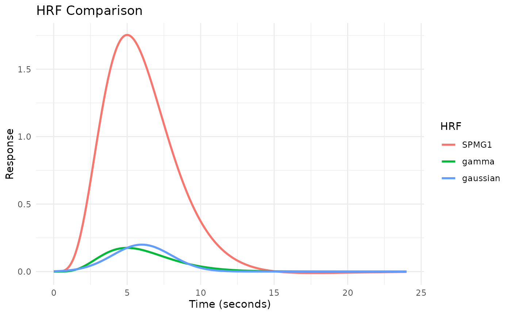
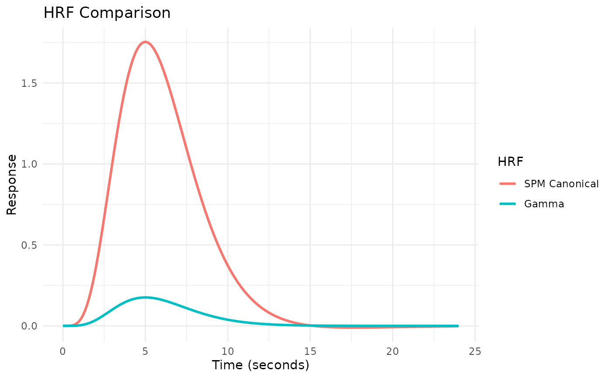
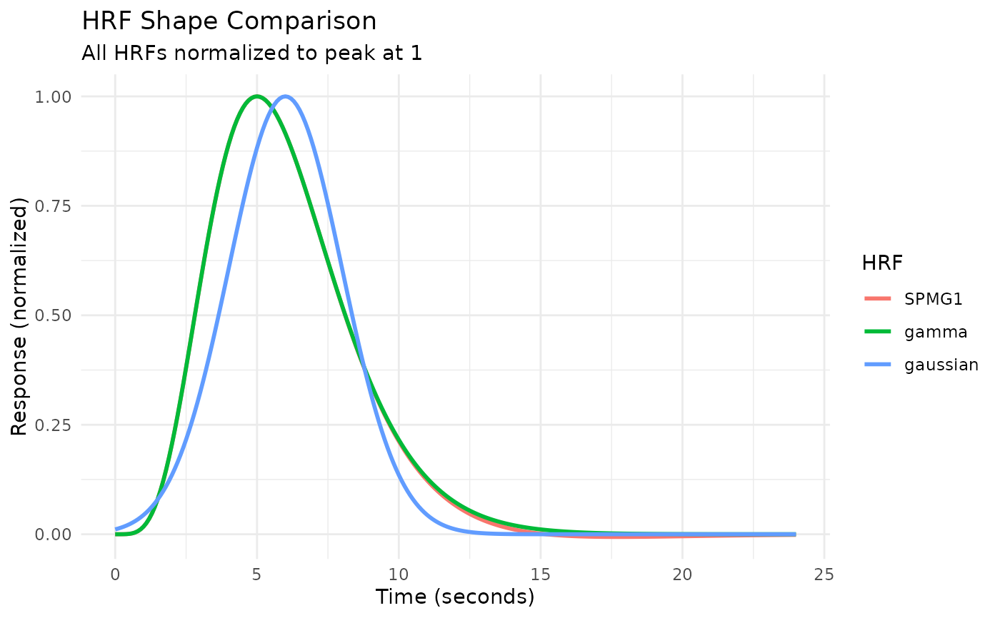
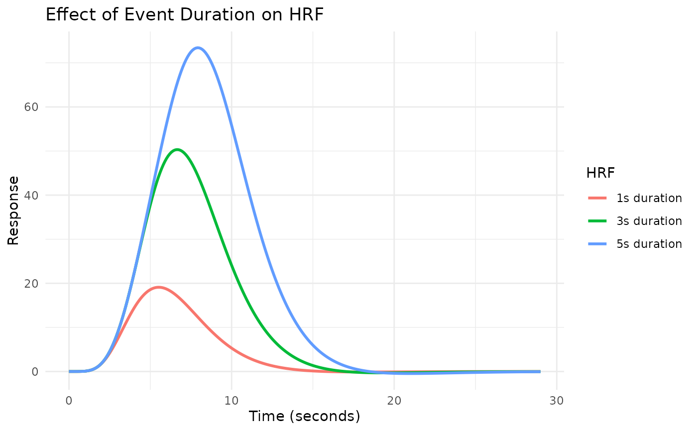
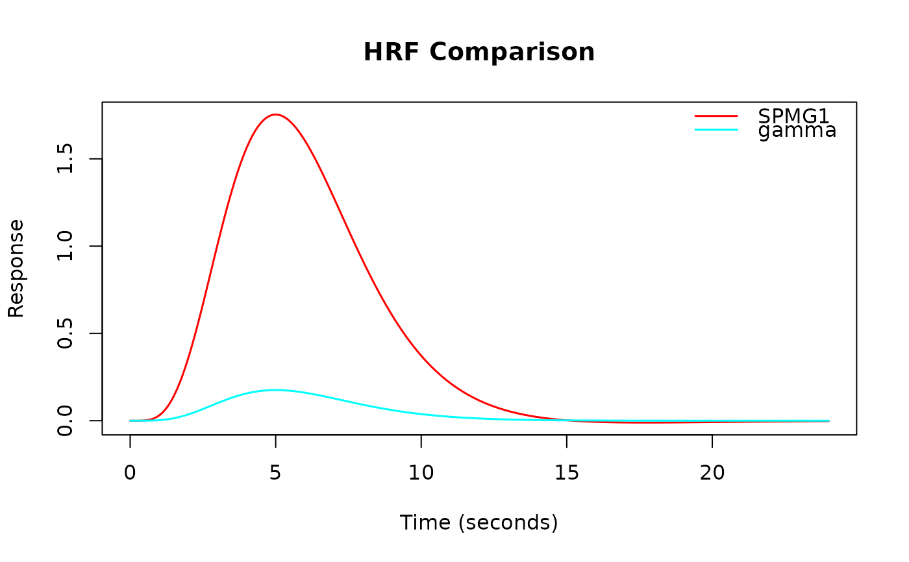

Creates a comparison plot of multiple HRF objects. This function provides a convenient way to visualize different HRFs on the same plot, with options for normalization and customization. Uses ggplot2 if available for publication-quality figures, otherwise falls back to base R graphics.
Usage
plot_hrfs(
...,
time = NULL,
normalize = FALSE,
labels = NULL,
title = NULL,
subtitle = NULL,
use_ggplot = TRUE
)Arguments
- ...
HRF objects to compare. Can be passed as individual arguments or as a named list.
- time
Numeric vector of time points. If NULL (default), uses seq(0, max_span, by = 0.1) where max_span is the maximum span across all HRFs.
- normalize
Logical; if TRUE, normalize all HRFs to peak at 1. Useful for comparing shapes regardless of amplitude. Default is FALSE.
- labels
Character vector of labels for each HRF. If NULL (default), uses the 'name' attribute of each HRF, or "HRF_1", "HRF_2", etc.
- title
Character string for the plot title. If NULL (default), uses "HRF Comparison".
- subtitle
Character string for the plot subtitle. If NULL (default), no subtitle is shown.
- use_ggplot
Logical; if TRUE and ggplot2 is available, use ggplot2 for plotting. If FALSE, use base R graphics. Default is TRUE.
Value
Invisibly returns a data frame in long format with columns 'time', 'HRF', and 'response'. If use_ggplot is TRUE and ggplot2 is available, also returns a ggplot object as an attribute 'plot'.
Examples
# Compare canonical HRFs
plot_hrfs(HRF_SPMG1, HRF_GAMMA, HRF_GAUSSIAN)

# Compare with custom labels
plot_hrfs(HRF_SPMG1, HRF_GAMMA,
labels = c("SPM Canonical", "Gamma"))

# Normalize for shape comparison
plot_hrfs(HRF_SPMG1, HRF_GAMMA, HRF_GAUSSIAN,
normalize = TRUE,
title = "HRF Shape Comparison",
subtitle = "All HRFs normalized to peak at 1")

# Compare blocked HRFs with different durations
hrf_1s <- block_hrf(HRF_SPMG1, width = 1)
#> Warning: Parameters P1, P2, A1 are not arguments to function SPMG1_block(w=1) and will be ignored
hrf_3s <- block_hrf(HRF_SPMG1, width = 3)
#> Warning: Parameters P1, P2, A1 are not arguments to function SPMG1_block(w=3) and will be ignored
hrf_5s <- block_hrf(HRF_SPMG1, width = 5)
#> Warning: Parameters P1, P2, A1 are not arguments to function SPMG1_block(w=5) and will be ignored
plot_hrfs(hrf_1s, hrf_3s, hrf_5s,
labels = c("1s duration", "3s duration", "5s duration"),
title = "Effect of Event Duration on HRF")

# Use base R graphics instead of ggplot2
plot_hrfs(HRF_SPMG1, HRF_GAMMA, use_ggplot = FALSE)
